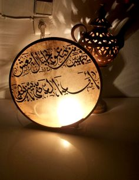
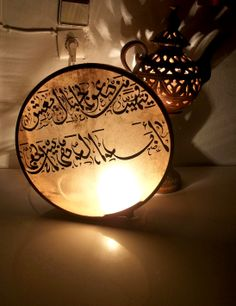
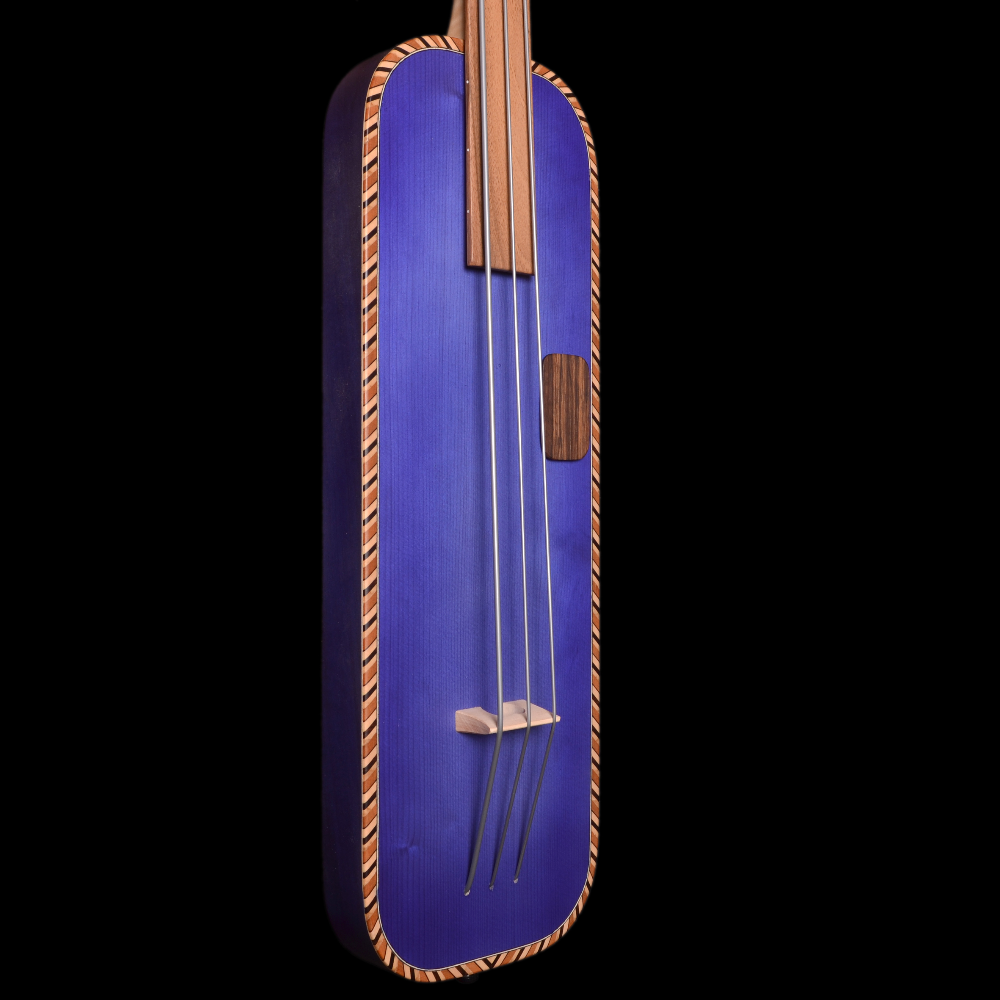
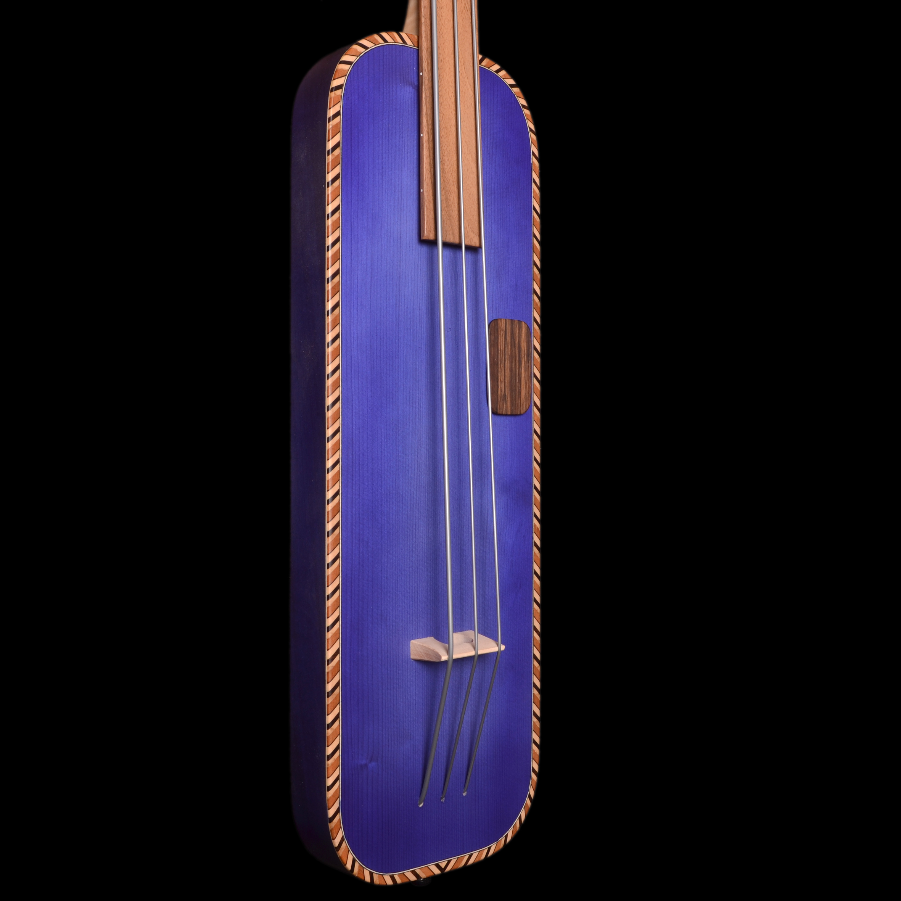

الموسيقى
الشعبي المغربي هي مجموعة من الأنواع الموسيقية المغربية الشعبية. تتواجد في السهول الأطلسية ذات الأغلبية العربية (دكالة-عبدة، الشاوية-ورديغة، الغرب-الشراردة-بني حسين وغيرها) وكذلك في الأطلس المتوسط. من الضروري التمييز بين الشعبي الأساسي، أو الشعبي الحديث، أو الشعبي بوب (المتأثر بالموسيقى الشعبية). ظهور موسيقى الراي في الجزائر، وهي أول من استخدم الآلات الحديثة في شمال إفريقيا وهي الموسيقى الشعبية المعمول بها منذ الثمانينات في المغرب
يمكن أن تتنوع آلات الشعبي المغربي: البندير، الدربوكة، الكمان، العود أو الكمبري، ومنذ الابتكار التكنولوجي ظهر الجيتار الكهربائي
 

 

الشعبي هي الموسيقى التي توجد بشكل متكرر في حفلات الزفاف وهذا النمط هو كذلك
غالبًا ما يرتبط بالاحتفال. تم استخدام اللغة الشعبية وإنشاء إيقاعات جديدة
هذا الأسلوب مكمل أساسي للرقص
يعتبر الزفاف المغربي من أهم الأحداث
في حياة الإنسان في المغرب. هذا الاحتفال غني بالألوان والموسيقى والطقوس
رمزية تعكس ثقافة وتقاليد البلاد